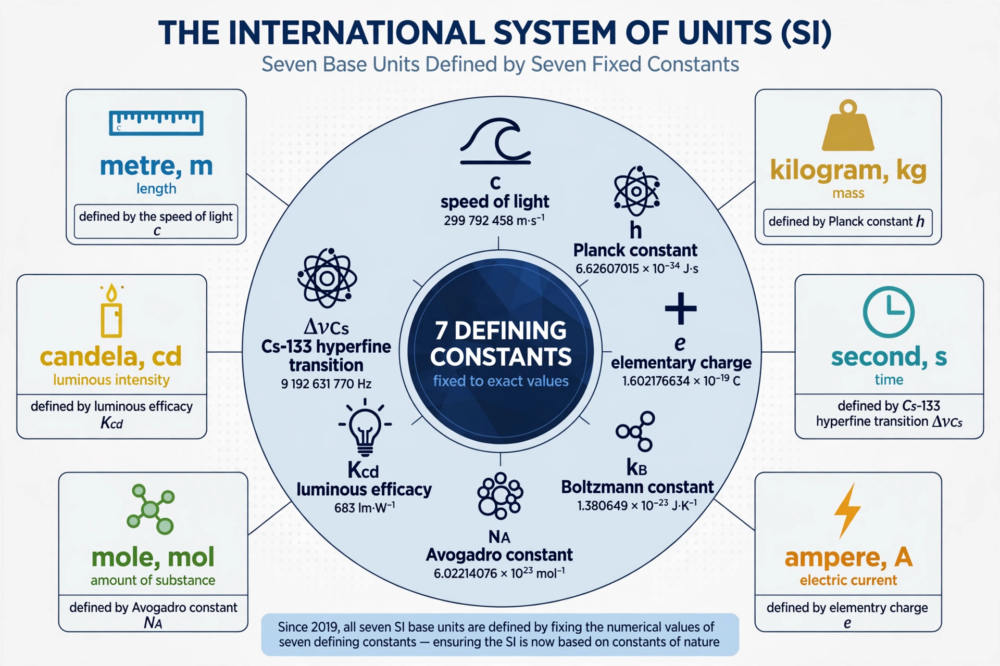

The 2019 revision of the SI, the most fundamental revision of the International System of Units (SI) since its formal adoption, took effect on 20 May 2019 — World Metrology Day, the anniversary of the Metre Convention. Following its adoption by the CGPM in November 2018, the definitions of the SI base units were recast in terms of seven defining constants of nature, abandoning the last physical artefact, the international prototype of the kilogram.

| 2019 revision of the SI | |
|---|---|
| Adopted | 16 November 2018 (26th CGPM) |
| Effective | 20 May 2019 |
| Units redefined | kilogram, ampere, kelvin, mole |
| Constants fixed | h, e, k, NA (newly); c, ΔνCs, Kcd (already fixed) |
| Constant | Symbol | Exact value | Unit defined |
|---|---|---|---|
| Planck constant | h | 6.62607015×10−34 J·s | kilogram |
| Elementary charge | e | 1.602176634×10−19 C | ampere |
| Boltzmann constant | k | 1.380649×10−23 J/K | kelvin |
| Avogadro constant | NA | 6.02214076×1023 mol−1 | mole |
The kilogram is now realised through the Planck constant, typically with a Kibble balance; the ampere through the elementary charge; the kelvin through the Boltzmann constant, replacing the triple point of water; and the mole through the Avogadro constant, severing its dependence on the kilogram. The second, metre and candela were reworded but materially unchanged.
Defining units by constants of nature makes them stable, universal and realisable anywhere at any scale, removing reliance on a single platinum–iridium cylinder whose mass had drifted relative to its copies by about 50 micrograms over a century.
See also: Metric system · Kibble balance · International System of Units